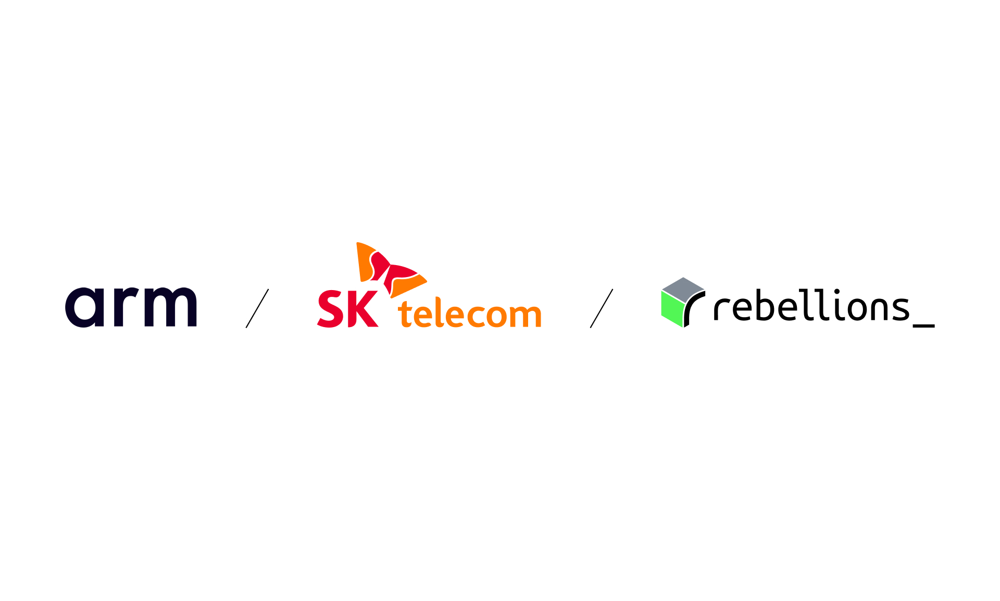

Rebellions, SK Telecom and Arm: toward a sovereign AI infrastructure standard
Rebellions' official 10 April 2026 release announces a collaboration with SK Telecom and Arm to build sovereign AI inference infrastructure for telecom data centers. The key signal is execution-oriented: combine Arm AGI CPU and RebelCard accelerators, validate in SK Telecom's live environment, then scale commercially.

1. What is officially announced
Rebellions, SK Telecom, and Arm announced a joint development effort for sovereign AI inference servers targeting telecom and public-sector-ready infrastructure. The announced stack combines Arm's AGI CPU (Neoverse CSS V3) with Rebellions' AI chips, with validation planned in SK Telecom's operational AI data center environment.
2. Why this is a strong sovereign AI signal
The release goes beyond chip-level messaging: the partners explicitly position a full software-and-firmware co-development approach and production validation for organizations that require independent, stability-proven AI infrastructure under local control constraints.
3. Operational takeaway for organizations
This partnership confirms a practical shift from narrative to deployment: inference-first architecture, real-world validation, then targeted market expansion, especially across Asia. For decision-makers, sovereign AI increasingly means infrastructure design and operating-governance choices rather than model selection alone.
Prioritize a sovereign inference roadmap: CPU/NPU architecture choices, controllable software stack, and validation plan in live operations.
Start scoping